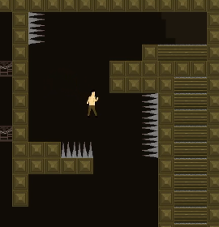
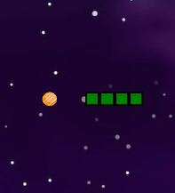

Self Introduction
My name is Kirby Saligo, and I love video games. In particular, my favorite video games are Hollow Knight and X-Com, though I play games of nearly every genre. The only thing a game needs to achieve to be worth playing for me is to be fun in its own way. My goal is to become a game designer after graduation making or design games. I love thinking of and experimenting with game mechanics and figuring out balancing, what would make it more fun and how all the pieces of a game work together to make the experience. In general, all parts of my time at RIT is geared towards that goal, with the minor exceptions of my Japanese immersion and my ballroom club activities, which serve as my leisure time here.
Spaceship Shooter
IGME 202 Project 1
This 2D Shooter is a spaceship simulator made in Unity where the player is given the ability to pilot a ship against waves of enemies, levelling up over time with increasingly powerful stats against progressively stronger enemies.
In Ruins
IGME 106 Final Project
In Ruins is a 2D platformer created with C# Monogame Framework with progressively more difficult levels with a simple movement system that allows the player to control the height of their jump based on how long they hold down the jump button.
Snake
IGME 235 Final Project
Snake was an attempt to recreate the iconic snake game through only HTML, CSS, and JavaScript. This attempt was successful and even includes a high score system and randomly generated 'food' pieces.